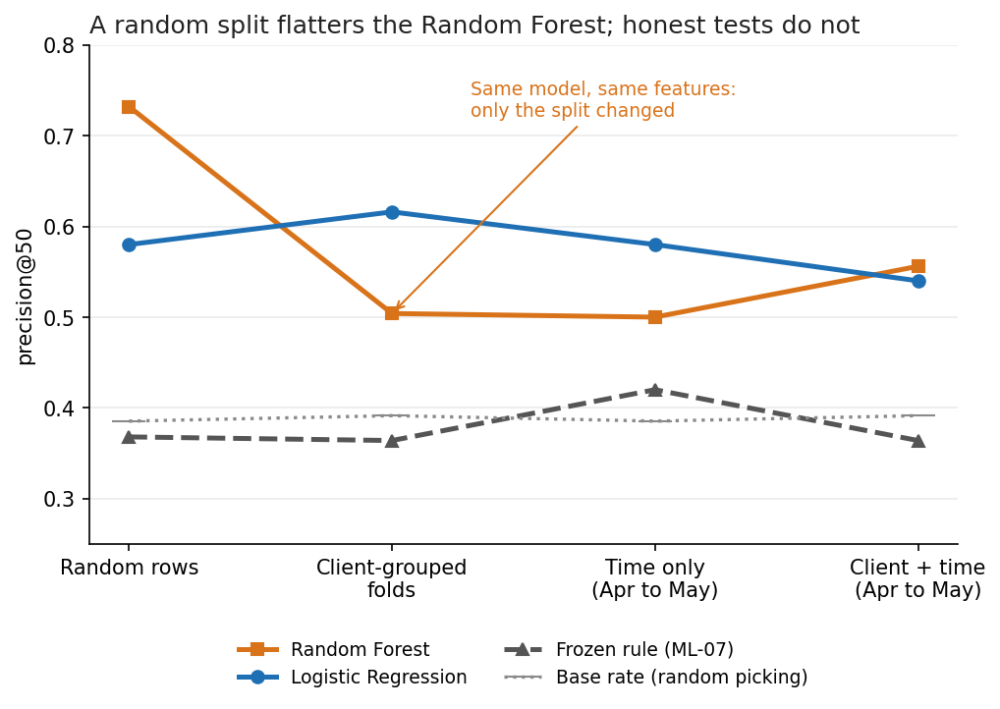
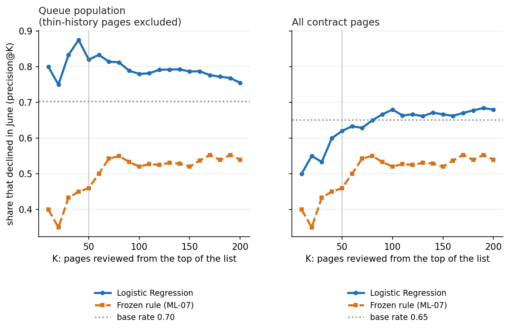
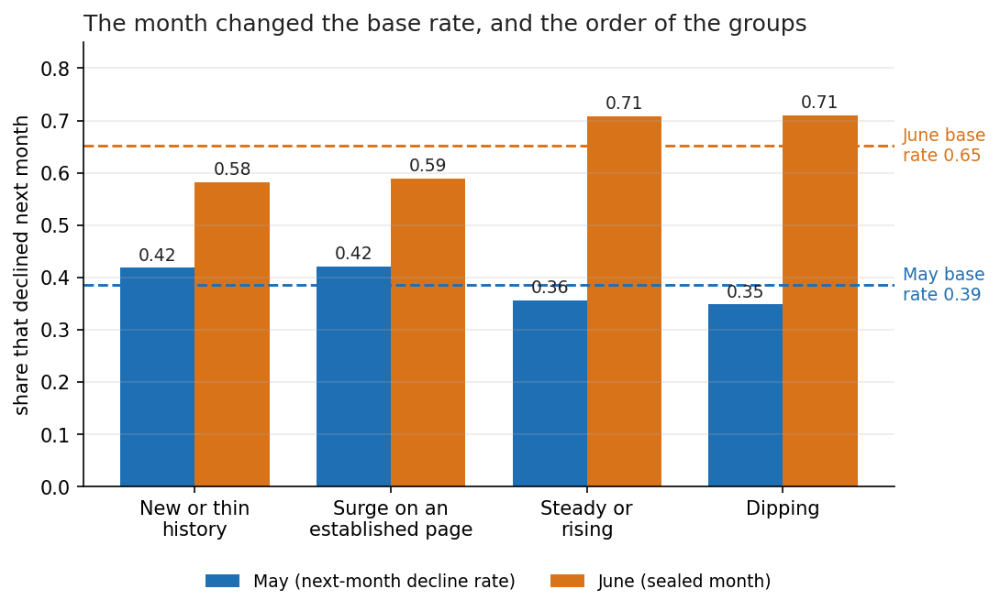
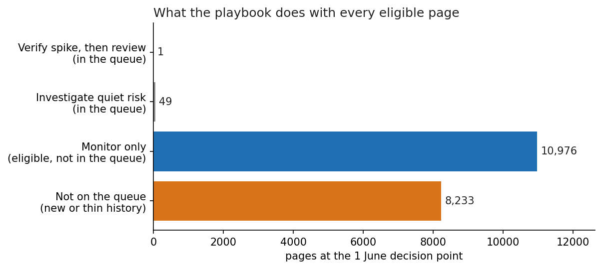

Abstract
A content team can review about 50 pages a month out of thousands, so the useful question is which 50 to open first. Using daily clicks, impressions and position for 16,513 eligible pages from 36 clients (FlyRank ML Internship dataset, January to June 2026), I labelled a page as declining when its next-month clicks fell below 80% of the latest month, and compared a frozen, transparent rule with a Logistic Regression and a Random Forest. Validation was client-grouped, then time-forward, and it ended with a sealed month (June 2026) that was read once, after every setting was frozen. A random split flattered the Random Forest (precision@50 of 0.73), but on unseen clients and a later month the two models scored 0.54 and 0.56 against a 0.39 base rate and 0.36 for the rule; in the sealed June month, when the share of declining pages jumped from 0.39 to 0.65, the model's 50-page queue scored 0.82 against 0.70 (but 0.62 against 0.65 across all pages) and the rule fell below random. The evidence supports using the score to order a human review under monthly monitoring, not as a detector of content decay, and it supports no causal claim about refreshing.
Introduction
Every month a content strategist faces thousands of published pages and time to look at a few dozen. The decision this work supports is which 50 pages to review first. That makes it a ranking problem judged at a fixed review budget: of the 50 pages on the list, how many really lost clicks the following month? Because a hit rate means little on its own, every number below is shown next to the base rate, the share you would get by picking pages at random.
The target is an observed proxy, not a business outcome. A page is declining when its next-month clicks are below 80% of its latest month. The proxy does not say why a page declined and does not say that a refresh would help. Language in this paper is deliberately limited to what was observed and measured, what is directional, and what is decision-support.
The question belongs to the lane “refresh / content opportunity scoring”. The paper reports what held up, what did not, and one sealed month that reversed part of the story.
Data
Release and tables. FlyRank ML Internship warehouse, release v20260703. Only the daily page-performance table was used, and only three measures from it: clicks, impressions and average position. Daily rows were summed into page-level months. Page and client identifiers are hashed, and nothing here names a client, domain, URL or query.
Windows. Each decision point looks back over three months and forward one. Pages are counted after the identical-row block (below) is excluded.
| Decision point | Features from | Label month | Pages | Clients | Share declining (base rate) |
|---|---|---|---|---|---|
| 1 April | Jan-Mar | April | 16,778 | 29 | 0.538 |
| 1 May | Feb-Apr | May | 15,680 | 36 | 0.385 |
| 1 June (sealed) | Mar-May | June | 19,259 | 37 | 0.652 |
Eligibility. A page enters when it has at least 1,000 impressions over the three feature months and at least 10 clicks in the latest one. At the 1 May point that leaves 16,513 of 380,147 pages from 36 clients (15,680 after the exclusion below).
What was left out, and why.
- Product flags, health scores and trend labels were never loaded: they risk leaking the answer and are not public-safe.
- Session, scroll and AI-referral fields were excluded: they exist only for some pages, and a zero before tracking began does not mean nothing happened.
- Identifiers are hashed and used only to join and to keep each client on one side of a split.
- A block of 833 pages from one client shares an identical feature vector, and 99.6% of them declined. Identical rows are not independent evidence, so any feature vector repeated 20 or more times is excluded (173 pages at the June point). The rule uses feature columns only.
- Pages with fewer than 10 clicks in the first or middle month (new or thin history) are scored but are not eligible for the queue.
Coverage check. Days with data per month (of the calendar days): 01/2026: 31/31, 02/2026: 28/28, 03/2026: 31/31, 04/2026: 30/30, 05/2026: 31/31, 06/2026: 30/30. Every month is complete.
Methodology
Label, features and baseline
The label is 1 when next-month clicks are below 80% of the latest month. The nine features are known at the decision point: impressions and clicks over the window, impressions and clicks in the latest month, clicks in the first month, a log-momentum term, CTR, an impression-weighted position, and the number of active days. Counts are log-transformed and scaled for the Logistic Regression.
The frozen baseline rule flags a page when its latest-month clicks are at least 2× the average of the two months before, and the page had at least 10 clicks in each of those two months. Flagged pages are ordered by surge strength times impressions percentile. Exact ties are broken by a seeded hash, never by file order. The rule was written and frozen before any model was trained.
Models and metric
A Logistic Regression (the readable first model), a depth-4 Decision Tree, a Random Forest (300 trees, declared as the primary model before any result) and a small fixed Hist Gradient Boosting, all with fixed settings and no tuning on any held-out fold. The metric is precision@50, the review budget, with precision@10, @100 and AUC as secondary. The base rate sits beside every result. Every method sees the same pages, folds, metric, K and tie policy. Seed 42.
Validation design
Four designs, in order of how honest they are. Random rows (the contrast): pages of the same client are on both sides. Client-grouped folds: five folds, every client in exactly one test fold, asserted in code. Time only: train at the 1 April point, test at 1 May without changing anything. Client + time: train on April pages of other clients, test on May pages of the held-out clients. Finally, a sealed month: the model is trained only at 1 May, the queue is built at 1 June from March to May, and June is read once, after the settings, thresholds and archetype cut-offs are printed and frozen.
Leakage controls
Features end before the label window starts. The label's ingredient (next-month clicks) is never a feature. As a harness, I added a column built from it on purpose: precision@50 went to 1.00 and AUC to 1.000, so the audit can see a leak; the column was removed. Groups of features were also removed to see whether the result depends on a suspect group.
Results
1. The more honest the test, the lower the score
| Validation design | Frozen rule | Logistic Regression | Random Forest | Base rate |
|---|---|---|---|---|
| Random rows | 0.37 | 0.58 | 0.73 | 0.385 |
| Client-grouped folds | 0.36 | 0.62 | 0.50 | 0.391 |
| Time only (Apr to May) | 0.42 | 0.58 | 0.50 | 0.385 |
| Client + time (Apr to May) | 0.36 | 0.54 | 0.56 | 0.391 |

Roughly 23 points of the Random Forest's random-row score came from recognizing clients it had already seen. Under client + time, the Logistic Regression (0.54 ± 0.13) and the Random Forest (0.56 ± 0.07) are indistinguishable at this size. The base rate itself moved from 0.538 at the April point to 0.385 at the May point.
2. Five methods on client-grouped folds
| Method | P@10 | P@50 (mean ± sd over folds) | P@100 | AUC |
|---|---|---|---|---|
| Frozen rule (ML-07) | 0.42 | 0.36 ± 0.09 | 0.41 | 0.501 |
| Logistic Regression | 0.68 | 0.62 ± 0.08 | 0.58 | 0.581 |
| Decision Tree (depth 4) | 0.48 | 0.44 ± 0.09 | 0.43 | 0.543 |
| Random Forest | 0.48 | 0.50 ± 0.16 | 0.48 | 0.571 |
| Hist Gradient Boosting | 0.58 | 0.53 ± 0.07 | 0.46 | 0.568 |
Base rate 0.391. The two largest clients each form a fold of their own, so two of the five folds measure a single client. The Logistic Regression was best and the Random Forest, declared primary in advance, was the least stable (in one fold it fell below random). All AUC values are near 0.57 to 0.58, so the ranking is weak overall and useful mostly at the head of the list.
3. The sealed month
| Population | Pages | Base rate | Model P@10 | Model P@50 | Model P@100 | Model AUC | Rule P@50 |
|---|---|---|---|---|---|---|---|
| Queue population (thin-history pages excluded) | 11,026 | 0.704 | 0.80 | 0.82 | 0.78 | 0.532 | 0.46 |
| All contract pages | 19,259 | 0.652 | 0.50 | 0.62 | 0.68 | 0.554 | 0.46 |

The result depends on the population. Among pages eligible for the queue, the model's top 50 declined 82% of the time against a 70% base rate. With only 50 pages, the chance margin is about ±11 points, so this is directional. Across all contract pages the model's top 50 declined 62% against 65%. AUC is 0.532 on the queue population and 0.554 on all pages. The frozen rule's top 50 declined 46% of the time, below the base rate.

| Archetype | May pages | May decline rate | June pages | June decline rate |
|---|---|---|---|---|
| New or thin history | 7,322 | 0.418 | 8,233 | 0.582 |
| Surge on an established page | 435 | 0.421 | 470 | 0.589 |
| Established, steady or rising | 4,806 | 0.356 | 6,280 | 0.708 |
| Established, dipping | 3,117 | 0.348 | 4,276 | 0.710 |
The idea that “a spike reverts” therefore held weakly in May and did not hold in June. The monitoring check on the base rate fired, as it was designed to.
4. What the leakage audit found
| Features used (client-grouped, base rate 0.391) | LR P@50 | LR AUC | RF P@50 | RF AUC |
|---|---|---|---|---|
| all 9 features | 0.62 | 0.581 | 0.50 | 0.571 |
| without click-level features (5 removed) | 0.50 | 0.549 | 0.45 | 0.548 |
| click-level features only | 0.38 | 0.519 | 0.47 | 0.550 |
Click-level features are legal inputs, because they are known before the label month, but they sit close to the label and the result leans on them: without them the Logistic Regression falls to 0.50 (still above the base rate). Click-level features alone do not work, so the signal comes from clicks and impressions together.
| April clicks | Pages | Base rate | AUC inside the band | Precision in the top 20% of scores | Lift (points) |
|---|---|---|---|---|---|
| 10-19 April clicks | 7,066 | 0.410 | 0.527 | 0.422 | +1.2 |
| 20-49 | 5,635 | 0.378 | 0.532 | 0.428 | +5.0 |
| 50 or more | 2,979 | 0.342 | 0.479 | 0.337 | -0.4 |
Small pages decline more often, which fits regression to the mean. Inside each size band the broad ranking adds little, so a good part of the overall ordering is sorting by page size. This band check looks at the top 20% of scores, not at the top 50.
5. What the errors look like
In the five client-grouped top-50 lists of the Random Forest, 126 of 250 pages declined (50%, against a 39% base rate), but the median hit and miss were almost identical (14 April clicks, 2 February clicks, 71 active days). The lists are full of small pages near the 10-click floor, where one or two clicks decide the label. The declines the model missed were bigger and steadier pages: 1,205 of 6,043 declined pages scored in the bottom quarter of their fold, against 1,814 in the top quarter, while chance would give a quarter each. The model catches small pages that fall back and misses established pages that decline, and the second kind is closer to decay.
Limitations and honest framing
- Three windows, one month each. The forward evidence is the April-to-May test and the sealed May-to-June month. That is thin temporal evidence, not a walk-forward over many months.
- The ranking is weak overall. AUC is 0.50 to 0.63 across designs (the rule is about 0.50), and the spread across folds is 7 to 13 points at precision@50.
- The label rate moved a lot. It was 0.54, 0.39 and 0.65 at the three decision points. This work does not establish whether the June jump is seasonal, real or a data artifact (the coverage check above reports the days present per month). The scores order pages; they are not calibrated probabilities, and calibration was not evaluated.
- The population changes the conclusion. On queue-eligible pages the model is above the base rate in June; on all pages it is not.
- Click-level features. The result leans on features close to the label, and the broad ranking adds little inside page-size bands.
- The label is a proxy and partly reflects regression to the mean. It cannot see slow decay over several months.
- The portfolio is lopsided: the top five clients hold 72% of the pages, and client base rates run from 3% to 75%.
- The queue is made of small pages: median 15 clicks in the latest month, 41 of 50 rows carry a low-confidence note, and only 1 of 50 rows has a rule-based reason code.
- No causal claim. Nothing here shows that refreshing a page recovers traffic, and nothing claims to explain a search engine's ranking.
Ranked recommendations (action playbook)
The playbook was built to be used by a person: the rule supplies the reason, the model supplies the order, and a human decides. It is a plan with limits, not a production system.
| Action | When | Reason code |
|---|---|---|
| Verify the spike, then review | The rule flags the page (latest month at least 2x the earlier average, with enough history) | click_surge_vs_prior |
| Investigate quiet risk | The model puts the page in the top 50 but the rule has no flag | model_score_high_no_rule_flag |
| Monitor only | Established pages not in the queue | none |
| Not on the queue | Fewer than 10 clicks in the first or middle month | thin_history |

Before acting on any row, a person checks
- Is the spike a tracking or campaign artifact (always, above 7x)?
- Is the topic seasonal?
- Is it a durable climb that was already rising?
- Is the page still about what people search for?
- Is the client changing or recently optimizing the page?
- Are the counts tiny (fewer than 30 clicks)? One or two clicks can decide the label.
What must not be automated
| No-go rule | Status in this work |
|---|---|
| new or thin-history pages never enter the queue | implemented, asserted |
| identical-row blocks are excluded | implemented, asserted |
| jumps above 7x go to verification first (low confidence) | implemented, asserted |
| a model score alone is never a reason (investigate_quiet_risk) | implemented |
| durable-climb pages need a human check | proposed, not automated |
| recently optimized pages wait out a cooldown | NOT implemented (needs optimization history) |
The queue never authorizes a rewrite, and a model score alone is never a reason. Scores are not shown as calibrated probabilities.
Monitoring and retraining triggers
A light plan with two clocks: checks before the queue is released (population size, feature drift) and checks after labels arrive (base rate, model against rule and base rate). These are proposed thresholds, run here in a notebook only. This is what they showed on the sealed June month:
| Check | Value | Would fire |
|---|---|---|
| eligible pages differ from the training frame by more than 30% | +22.8% | no |
| any key feature has PSI above 0.25 | max 0.148 | no |
| base rate differs from the training base rate by more than 10 points | 0.704 vs 0.385 (+0.318) | yes |
| model precision@50 is not above max(base rate, rule) + 5 points | model 0.82 | rule 0.46 | base 0.70 | no |
| Feature | PSI (1 May training vs 1 June scoring) | Status |
|---|---|---|
| impressions_apr | 0.048 | stable |
| clicks_apr | 0.008 | stable |
| weighted_position | 0.148 | watch |
| momentum_apr_vs_feb | 0.049 | stable |
| active_days | 0.108 | watch |
Cost and value, with the assumptions visible
The value of a batch is the number of pages that really declined in the list beyond random picking: 50 × (precision@50 − base rate). On queue-eligible pages in June this is +5.8 pages for the model and -12.2 for the rule; across all pages it is -1.6 for the model. The cost is reviewer time. At an assumed 10 minutes per page, a batch takes 8.3 hours. This is a descriptive scenario from one month, not a forecast, and it says nothing about traffic recovery, which would need a controlled test.
What I would do next
- Record what reviewers decide for each row, to build outcome labels that are not a proxy.
- Run the same test over many more months (a walk-forward) and check why the label rate jumped in June.
- Test whether the top-50 lists sit near the 10-click floor, and add a longer window for slow decay.
- Calibrate the scores and check each client separately.
Reproducibility
- Repository: github.com/HamzaMohamed25/flyrank-ml-internship. Notebooks, in order: data contract, baseline, model, validation audit, action playbook and this capstone notebook.
- Receipts: every number on this page comes from the committed JSON files in
work/outputs/(data contract, baseline, model, validation audit, playbook). The capstone notebook reads them and regenerates this page and its figures. - Sealed month: the cell that builds the June frame and the file it produced (
w07_playbook_metrics.json) are both committed. Settings were printed before June was read. - Settings: seed 42; Python 3.13.16, NumPy 2.1.3, pandas 2.2.3, scikit-learn 1.6.1. Data release v20260703 (gated; access is requested from the program).
- Not committed, by design: data files and the page-level queue. They are regenerated by the notebooks.
Acknowledgments and data credit
Built on the FlyRank ML Internship dataset (https://flyrank.ai). Thanks to the FlyRank internship team for the live sessions and the framework this work follows. The research paper “The State of AI-Driven SEO, March 2026” (FlyRank) was used as the example in the claim audit. Models: scikit-learn. This is student work; it makes no claim about how any search engine ranks pages.